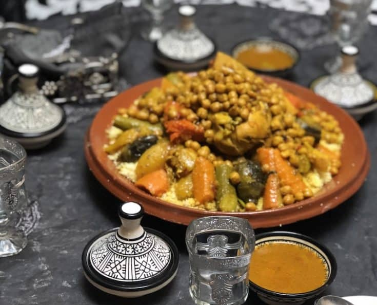
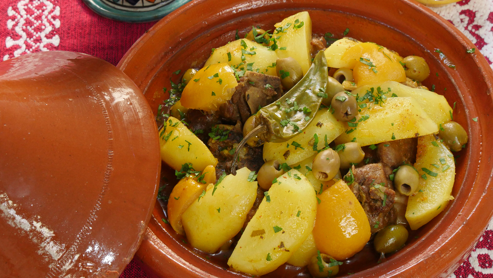

Heat the oil in a large frying pan. Add the chicken and fry it skin-side down, until crisped up and brown. Turn the thighs over and cook for a couple more minutes, then remove them from the pan. Add the butter to the pan and when it has melted, add the onions and fry them gently until soft. Add the garlic and spices and fry for a couple more minutes.
Put the chicken back in the pan and pour in the stock or 500ml of water. Season, then cover the pan and simmer for about half an hour or until the chicken is tender. Remove the chicken and set it aside. When it is cool enough to handle, finely chop the meat – it’s up to you whether you keep the skin or not. Put the liquid back over the heat and reduce it by half.
Add the eggs to the cooking liquid and continue to cook over a low heat until you have a mixture that resembles loose scrambled eggs. Add the ground nuts and stir, then add the dates, orange blossom water, zest and finally, the chicken. Remove the pan from the heat and allow to cool.
Preheat the oven to 180°C/Fan 160°C/Gas 4. To assemble the pie, you need a large ovenproof dish about 28cm in diameter
Take a sheet of filo pastry and brush it with melted butter. Drape it over the dish, making sure it is gently pushed into the corners without any tearing. Repeat with another sheet of filo, this time placing it at a right angle to the first. Repeat with a further 2 sheets of filo, this time placing them on the diagonal.
Spread the filling over the pastry. Fold over the overhanging pieces of filo in reverse order – they should just about cover the filling. Take the remaining 2 pieces of filo and cut them to fit the dish. Brush them with butter, then cover the pie, tucking under any corners. Bake the pie in the oven for about 30 minutes until the pastry is a crisp, golden brown. Remove from the oven and allow to cool a little before dusting it with the icing sugar and cinnamon.
Couscous

Ingredients
1 cup couscous
1 cup boiling water
1 tablespoon olive oil
1 onion, finely chopped
2 cloves garlic, minced
1 carrot, diced
1 zucchini, diced
1 red bell pepper, diced
1 yellow bell pepper, diced
1 cup canned chickpeas, drained and rinsed
1 teaspoon ground cumin
1 teaspoon ground coriander
1/2 teaspoon ground cinnamon
Salt and black pepper to taste
1 can (14 oz) diced tomatoes
1/2 cup vegetable broth
1/4 cup raisins or currants
Recipe
Prepare the couscous: Place the couscous in a large bowl. In a separate bowl, combine the boiling water, olive oil, and salt.Pour the hot liquid over the couscous, cover the bowl with a lid or plastic wrap, and let it sit for about 5 minutes. Fluff the couscous with a fork to separate the grains
Prepare the Vegetables: In a large skillet or pan, heat 2 tablespoons of olive oil over medium heat. Add the chopped onion and minced garlic and sauté for 2-3 minutes until they become fragrant and translucent.
Add the Vegetables and Spices: Add the diced carrot, zucchini, red bell pepper, and yellow bell pepper to the skillet with the onions and garlic. Sauté for another 5-7 minutes until the vegetables start to soften.
Season with Spices: Sprinkle ground cumin, ground coriander, ground cinnamon, salt, and black pepper over the sautéed vegetables. Stir to evenly coat the vegetables with the spices.
Prepare the Sauce: Add the diced tomatoes, vegetable broth, raisins or currants, and chopped fresh cilantro to the skillet. Stir well and let it simmer for about 10-15 minutes, allowing the flavors to meld and the sauce to thicken.
Combine Couscous and Sauce: Once the sauce is ready, pour it over the cooked couscous. Gently stir to combine and ensure even distribution of vegetables and sauce.
Add Lemon Juice: Squeeze the juice of one lemon over the couscous and stir again to incorporate the fresh citrus flavor.
Serve: Garnish the Moroccan couscous with fresh cilantro leaves and lemon wedges.
Tagine

Ingredients
1 Large Onion
1 Handful chopped parsley or coriander
2 tsp Salt
1/2 tsp Ground black pepper
1 green cayenne chilli pepper
1 tsp Ground ginger powder
1 tsp Tumeric
1 pinch Saffron threads
3 cloves Garlic
1/3 cup Olive Oil
1/2 kilo Lean Beef
700 grams Potatoes
1 Large handful of green or red olives
1/2 Preserved lemon
3 cups Water
Recipes
Mix the meat with chopped onion, garlic, chopped parsley, spices, and olive oil.
Brown the meat & spice mix over a medium heat for about 10 minutes, stirring occasionally, the pot doesn't need to be covered at this point
Brown the meat & spice mix over a medium heat for about 10 minutes, stirring occasionally, the pot doesn't need to be covered at this point
Add 3 cups of water and cover the pressure cooker. Cook the meat under pressure for about 40 minutes starting the timer from when it whistles and heat is reduced.
When the time is up you can put the pressure cooker under a cold tap to hasten the cooling process, this allows you to release the whistle and open the lid sooner. ALWAYS WAIT UNTILL ALL AIR IS RELEASED before attempting to open.
Taste for salt and adjust the seasoning if necessary before completely done. you can then serve the stew into a pretty tagine or traditional Moroccan plate if you have one. When serving, serve the meat pieces first around the plate, followed by the potatoes on top, then add the olives & gravy evenly around the plate before garnishing with the preserved lemon on the top centre.